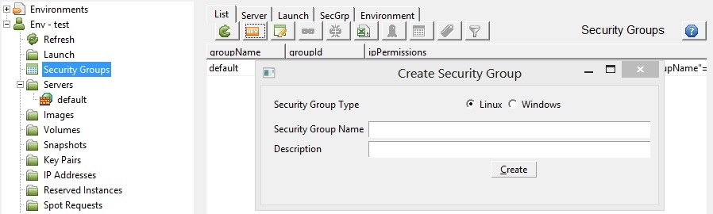
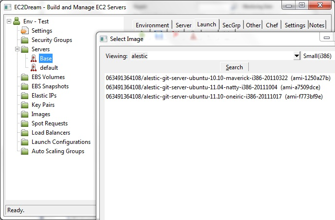
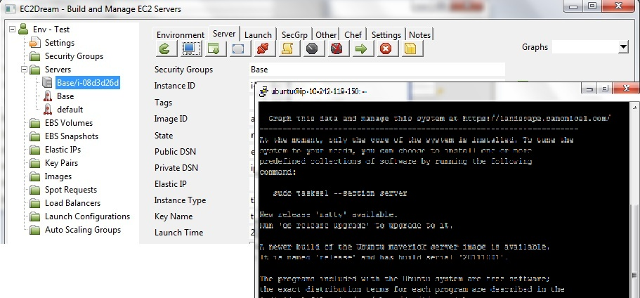
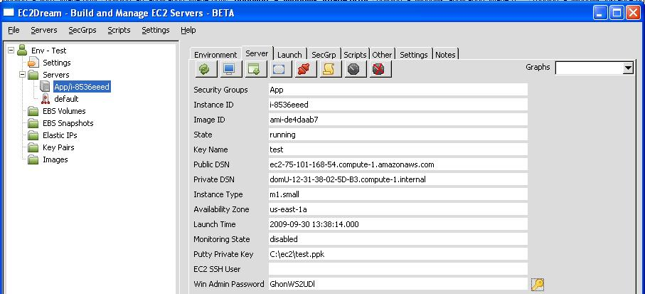

Run a Server Instance
Setting up a Security Group
Every launched instance requires that you have a security group defined to specify what network traffic is allowed to reach the instance. By default no traffic is enabled.We will create a new group called App. You might like to call the group another name that identifies your application.
Rackspace
Skip this step as Rackspace currently does not support security groups.1. In the tree view click on Security Groups in the left hand tree to go into the SecGrp panel then click on the New button
2. Create a Security Group called Base and check the windows server option if creating a windows server.

3. Press "Create" and the security group is created.
For a linux server it will allow incoming traffic from all IP address to connect to any launched instances on SSH port (22).
For a windows server it will allow incoming traffic from all IP address to connect to any launched instances on RDP port (3389).
4. You will see a new reference to Base in the Servers in the left-hand tree panel.
NOTE: To add extra ports or to tighten security for the SSH port to just your client IP Address.
5. Authorizations are created by clicking on the
6. Authorizations are revoked by clicking on the
Launching an Instance
1. In the tree view click on the Base under Servers and the launch profile tab will open.Rackspace
Use the default simulated security group.2. Select the Image ID by clicking on the icon
Amazon
The the following images are recommended.For Ubuntu view the alestic images on http://alestic.com and select the latest ubuntu base image for your EC2 region.
For CentOS view the Public images with right in the description and select the latest rightscale image e.g. 944964708905/rightimage_centos_6.2_i386_20120618
For Windows view the Amazon images with windows in the description and select the latest Windows 2008 Server image e.g. amazon/Windows_Server-2003-R2_SP2-English-64Bit-Base-2012.05.10
Other clouds
Use the default linux or windows images.
3. Select a keypair by clicking on the icon
4. Select an Availability Zone
5. Press the Launch icon and the launch profile is saved and the server is launched.
If you refresh the server tree by pressing refresh icon
Connecting to the Linux Instance
If using linux in the server panel update the EC2 SSH User to ubuntu as the root user is protected from logon.In the Server panel click on the terminal icon

Click on the WinSCP icom
Connecting to the Windows 2008 Server Instance
Amazon
If using windows server in the server panel click on the key icon
All Clouds
Click on the Remote Desktop iconNOTE: The Win Admin Password field contains the password